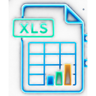

☰ Menu

NEXUS · Manager
Nexus Verify
Rapproche les chiffres de caisse, calcule les écarts par moyen de paiement, et vous dit ce qui mérite vérification.
Nouvel audit
Historique
Rapport
Quart concerné
NEXUS Data Connector
Import ponctuel depuis un fichier, ou connexion récurrente à une feuille en ligne — les données absentes restent à compléter manuellement.

Import ponctuelEmployés présents
Cochez qui était présent sur chaque caisse pour ce quart. Pour l'instant à renseigner à la main — une prochaine version le pré-remplira automatiquement à partir des prises de poste (rôle, date, heure, quart) saisies à la connexion.
Sélectionner les employés▾
Sélectionner les employés▾
Ventes théoriques
Saisissez le litrage réellement vendu par carburant (pupitre / master) — il alimente NEXUS Tempo pour révéler le rythme réel de chaque carburant, jour par jour. Le montant des ventes piste affiché sur le ticket pupitre ci-dessous est obligatoire : c'est lui qui fait foi pour la vente piste (plus fiable qu'un calcul litrage × prix mensuel arrondi, qui peut différer de quelques centimes) — l'enregistrement est bloqué tant qu'il n'est pas saisi.
Vente piste calculée : 0,00 €
Caisse Piste — Drops
À partir des justificatifs physiques (bons de drop, bons clients signés, factures fournisseurs) — pas des chiffres affichés dans le logiciel de caisse, qui peuvent différer de ce que l'employé a réellement saisi.
VitoCarte, Carte Total ou autre — précisez le type pour chaque règlement.
Total cartes de fidélité : 0,00 €
Total clients en compte piste : 0,00 €
Caisse Boutique — Drops
Justificatifs physiques (bons de drop, télécollecte CB, factures fournisseurs etc...) contrôlés par le manager.
Clients qui remboursent un impayé
0,00 €
▾
Rare — un règlement par ligne. Argent reçu ce quart pour solder une facture d'un mois précédent (ex: facture de juillet payée en août) — à ne pas confondre avec un compte client ouvert aujourd'hui (déjà inclus dans la vente boutique Decenium, ou dans « Clients en compte » côté piste). Précisez sur quelle caisse l'argent a été physiquement encaissé : sans ça, cet argent gonflerait artificiellement l'écart de la mauvaise caisse.
Piste : 0,00 € · Boutique : 0,00 €
Dépenses ponctuelles / Règlements fournisseurs
0,00 €
▾
Rare — une ligne par dépense, avec la caisse concernée (facture fournisseur comme justificatif).
Piste : 0,00 € · Boutique : 0,00 €
Remise en cuve
0,00 €
▾
Litrage remis en cuve par carburant — le montant est calculé automatiquement avec le prix du mois en cours (indexé par la préfecture de Martinique, à saisir dans Paramètres Station le 1ᵉʳ de chaque mois). Ce montant est déduit du théorique piste : ce carburant a été débité par la pompe mais jamais payé par un client.
Montant remise en cuve : 0,00 €
Autres éléments
0,00 €
▾
Rare — une ligne par paiement en espèces sorti d'une caisse, avec la caisse concernée. S'ajoute à l'expliqué de cette caisse.
Piste : 0,00 € · Boutique : 0,00 €
CONSEILLER NEXUS
Ce que je remarque sur ce quart